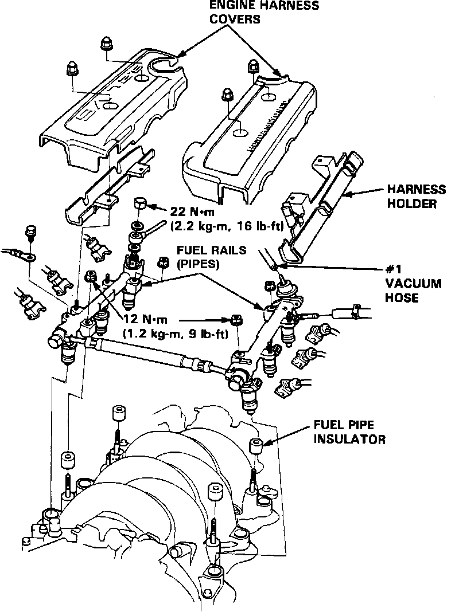
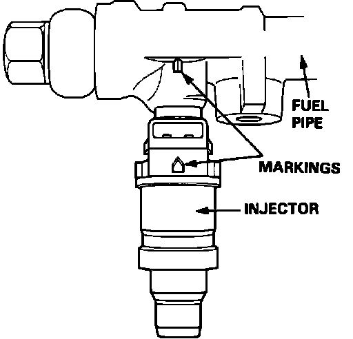

Fuel Injector: Service and Repair
Fuel System Service Bolt/Fuel Filter:

CAUTION: Do NOT smoke while working on the fuel system. Keep sparks and flame away from the work area.
1. Loosen the service bolt to relieve fuel pressure.
2. Remove the engine harness covers. Disconnect the electrical connectors from the injectors.
3. Disconnect the vacuum hose and fuel return hose from the fuel pressure regulator.
NOTE: Place a shop towel around the fuel return hose before disconnecting.
4. Disconnect the fuel line from the fuel rail.
5. Remove the retainer nuts from the fuel rail.
6. Remove the fuel rail.
7. Remove the injectors from the intake manifold.
Fuel Rail Assembly:

NOTE: Before installing a new injector, gently press on the pintle to make sure that it's free.
8. Install new cushion rings on the injectors.
9. Coat new O-rings with clean engine oil and install them on the injectors.
10. Insert the injectors into the fuel rail first.
11. Coat new seal rings with engine oil and press them into the intake manifold.
12. Install the injectors and fuel rail assembly in the intake manifold.
Injector Installation:

13. Align the center line on the connector with the mark on the fuel pipe.
14. Install and tighten the fuel rail connector nuts.
15. Connect the vacuum hose, fuel lines, and fuel hoses to the fuel pressure regulator. Torque fuel lines to:
16 ft.lbs. (2.2 kg-m)
16. Install the electrical connectors on the injectors.
17. Turn the ignition switch ON but do NOT operate the starter. After the fuel pump runs for about two seconds, pressure in the fuel lines rises. Turn the ignition switch OFF, then ON again two or three more times.
18. After pressurizing the fuel system, check the injectors and fuel rail assembly for any signs of leakage.
19. Re-install engine harness covers.